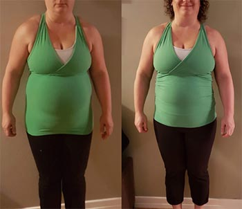

"Hogyan küzdenek a cukorbetegség ellen Kelet-Európában, és hogyan kell ellene küzdeni valójában. Egy híres német szakértő az endokrinológia területén őszinte interjút adott"
Klaus Volker, endokrinológus szakember Berlinből.

Tavaly Klaus Volker meglátogatott néhány kelet-európai országot, hogy megossza a tapasztalatait a kollégáival. Azt mondta, nagyon meg volt lepődve attól, amit látott ezekben az országokban. Állítása szerint ezekben az országokban nem a cukorbetegek gyógyításával foglalkoznak, hanem a rajtuk való meggazdagodással.
Egy németországi előadása után Klaus Volker beleegyezett, hogy interjút ad hírügynökségünknek. Megkérdeztük, mi lepte meg a legjobban utazása során. Erre a kérdésre próbált meg válaszolni az interjúban.
- Újságírók előtt ön kijelentette, hogy a kelet-európai országokban az orvostudomány területén szörnyű körülmények uralkodnak. Tudná kommentálni ezt?
- Szeretném leszögezni, hogy tisztelem a kelet-európai országokat. De az, amit láttam, ledöbbentett engem, és minden kollégámat. Hiszen a mi egészségügyünk teljesen más szabályok szerint működik. Legalábbis az endokrinológia terén.
Ezekben az országokban a diabétesz sajnos piszkos üzletté változott át. Hiszen diabétesz esetén az alap szereken kívül lehet még szedni kiegészítésként másokat készítményeket is, amelyek elősegítik a vércukorszint és a közérzet gyors normalizálását. De a kelet-európai országokban úgy tűnik erről "megfeledkeztek" vagy nem tudják.
A terápiával együtt járó vércukorszint-ingadozás azonban nem kevésbé veszélyes, mint a megemelkedett glükózszint. Ezt valamennyi szakember megerősítheti! Még ha lassabban is, de ártalmas az erekre és a belső szervekre nézve. Ez azt jelenti, hogy a cukorbetegség komoly következményeket vonhat maga után (látásproblémák, szívproblémák, reproduktív rendszer sérülése, veseelégtelenség, diabéteszes láb stb.) Talán csak egy kicsivel később jelenik meg.
Meg fog lepődni, de a cukorbetegség tüneteinek enyhítésére szolgáló módszert, amely Kelet-Európában annyira népszerű, Németországban nem használták 20 éve. Az itt felsorolt glükózszint csökkentő szereket csak rendkívül ritka esetekben használják, mégpedig akkor, amikor a glükózszint sürgős csökkentésére van szükség. Emellett léteznek kiegészítők is, amelyek szintén elősegítik a vércukorszint normalizálását.
Kelet-Europában miért nincs ez így? Ezt csak azzal a ténnyel tudom magyarázni, hogy ezekben az országokban a szakértők nem érdekeltek abban, hogy gyógyítsák a diabéteszt. Végülis el kell ismerni, hogy sokkal jobban megéri hosszú időn át profitálni a diabéteszre szánt készítmények eladásából, mintsem megoldani a problémát.
Amennyire tudom a kelet-európai páciensek problémákba ütköztek bizonyos diabétesz elleni szerek beszerzésénél.
Az emberek, akikkel ezekben az országokban találkoztam, gyógyszertári maffiáról beszéltek, szinte minden héten szó van erről a televízióban, de semmit nem tesznek ellene. Miért? Úgy gondolom, tudják a választ. Ezekben az országokban a diabétesz biztos bevételi forrás a gyógyszertári láncok számára.
- És mi a helyzet a cukorbetegek kezelésével Németországban?
- Németországban szinte minden cukorbetegségben szenvedő ember egészségesnek érzi magát, és a korábbi betegek több mint 60%-a visszatért a normális életvitelhez. Vagyis esetükben a betegség tünetei teljesen megszűntek. Mindez annak köszönhető, hogy a terápiát teljesen más módon közelítjük meg. Természetesen a 2. típusú cukorbetegségről, más néven a szerzett vagy korral együtt járó betegségről beszélünk (általában a kor előrehaladtával jelentkezik).
Európai tudósok a 2000-es évek elején arra jöttek rá, hogy a vér glükóz szintjét nemcsak az inzulin növelésével lehet normalizálni (a kelet-európai országokban jelenleg ezt a módszert alkalmazzák a cukorbetegség kezelésére, és csak átmeneti hatást fejt ki), hanem a glükóz hasadási reakciójának fokozásával is. Vagyis az inzulinrezisztencia csökkentésével. Az új megközelítés szerint sokkal kevesebb inzulinra van szükség a glükóz teljes lebontásához: a legtöbb esetben elegendő az a mennyiség, amelyet a szervezet saját maga kitermel.
A legfigyelemreméltóbb ebben a módszerben mégis az, hogy a kezelés során a hasnyálmirigy működése felerősödik mivel a szervezetet megtisztítjuk, ezáltal a 2-es típusú cukorbetegség tünetei is megszüntethetőek. Ez nem egy gyorsan lezajló folyamat, hat hónapot vagy akár egy évet is igénybe vehet, viszont a beteg visszanyeri korábbi egészségét. Mit jelent ez? Azt, hogy sokkal jobban fogja magát érezni, mint korábban.
Amikor megláttam a kelet-európai egészségügyi statisztikákat, felállt a szőr a hátamon. Tudta, hogy ezekben az országokban a cukorbetegség halálozás szempontjából a második helyen áll a szív- és érrendszeri megbetegedések után? Ráadásul a halál sok esetben fiatal korban következik be, a betegek 90%-a ugyanis nem él 60 évnél tovább!
- Kapható a a gyógyszertárakban?
- Mostanában nem. Értsék meg, hogy a termék piacra kerülése és árusításának lehetősége a gyógyszertári láncokban - nagyon hosszadalmas folyamat, mely sok előkészületet igényel.
Az a kérdés, hogy van-e vesztegetnivaló ideje azoknak akik magas vércukorszinttől szenvednek? Szerintem kevés az idejük, ezért ha ön magas vércukorszinttől szenved, már most tennie kell valamit. Nem szabad megvárni, amíg a a gyógyszertárakba kerül, meg kell hozzá keresni egy másik hozzáférési módszert.
- Milyen tanácsot tudna adni a cukorbetegeknek?
- «Nagyon egyszerű – foglalkozzon az egészségével és próbálja meg a t. Hol is lehet megvásárolni, kérdik majd. Válaszolok: manapság mindent meg lehet vásárolni az interneten. Ez alól a sem kivétel. Megvásárolható a hivatalos weboldalon.. Ami nekem nagyon tetszik ebben, hogy a termék most 50%-os kedvezménnyel kapható. Természetesen az akciósan megvásárolható dobozok mennyisége korlátozott, de még így is sokaknak van esélye hozzájutni. Nyomatékosan ajánlom minden 50 éven felüli személynek. Nyomatékosan ajánlom, mindne 50 éven felülieknek a megvásárlását.
Mit kell tenni ahhoz, hogy megszerezze a terméket:
- Látogasson el a hivatalos weboldalra és adja le a megrendelését.
- Hamarosan egy tanácsadó felveszi önnel a kapcsolatot és válaszol minden kérdésére. Ezután pedig pontosítja a kézbesítési címet.
- 5-7 nap múlva meg is kapja a csomagot postán keresztül.
Ezrek már éltek ezzel a lehetőséggel. Mindenkit, aki leadta a rendelését a ra, véleményfelmérésre kérnek fel telefonon, hogy elmeséljék, mennyire segített nekik a termék. Eddig 2000 ember vett részt a felmérésben.
A felmérés eredményei:
- a vércukorszint mérsékelt csökkenése - a válaszadók 99%-a
- A cukorbetegség összes tüneték csökkenése - szomjúság, fáradtság stb. - a válaszadók 96%-a
- jobb hasnyálmirigy funkció - a válaszadók 92%-a
- mérsékelt testsúlycsökkenés - a válaszadók 98%-a
- nem lépett fel semmilyen mellékhatás vagy függőség - a válaszadók 100%-a
*A statisztika telefonos véleményfelmérés alapján készült
- Mennyi ideig érvényes a termék akciója?
- Még van készleten. De, szeretném leszögezni, hogy kevés akciós csomag maradt. Az utóbbi időben nagyon sok megrendelést kapunk. Biztos, az emberekhez eljutott a termék magas hatékonyságának a híre.
Véleményem szerint, a – egy hatékony termék, mely támogatja a cukorbetegségben szenvedő szervezetet. Javasolni szeretném, hogy ne szalasszák el a lehetőséget, és rendeljék meg a kúrát. Jómagam is felhívom minden cukorbeteg figyelmét arra, hogy hagyja meg a rendelését ezen a weboldalon, ameddig még készleten van a termék.
FIGYELEM: A már megvásárolható. Megszerezheti a terméket 50% -os kedvezménnyel. Ehhez le kell adnia megrendelését (bezárólag). Az akciós termékek száma korlátozott. Óvakodjon a hamisítványoktól: az eredeti terméket csak a hivatalos weboldalon lehet megvásárolni! Ajándékként kap egy egészségügyi naplót "hogyan lehet legyőzni a cukorbetegséget".Ebben a naplóban hasznos tippeket talál az otthoni egészség javításához.
Köszönöm, nagyon érdekes. Megrendeltem a terméket. A telefonos tanácsadó azt mondta, hogy már csak nagyon kevés van belőle. Úgyhogy, aki meg akarja rendelni, az tegye meg minél előbb!
És hol rendelték meg a terméket?
Maga olvasta egyáltalán az interjút? Abban minden le van írva) Itt a link.
En azok eggyike vagyok, aki már megpróbálta a készítményt. A vércukorszintem most sokkal jobb. A szomjúság és szédülés is enyhült. Minden nap elenőriztem a vércukorszintem a használata után - nem emelkedett. 2 hónap telt el a kurzus kezdetétől. Egészségesnek érzem magam. Mindenkinek ajánlom.
Köszönöm. Érdekes. Olvastam az oldalon a termékről. Bámulatos.
Leadtam a rendelést. Azt mondták, hogy 5 nap múlva átvehetem a postán. Nagyon remélem. Már sok éve szenvedek ettől a problémától. Nem tudom miért, nem vagyok még öreg.
Németh Mária
Én már tegnap megkaptam ezt a szert. Az utolsó pillanatig nem hittem el, hogy tényleg hatásos. Azt gondoltam, hogy átverés. De már elkezdtem szedni és tényleg minden igaz, amit róla írnak. Segít.

Sziasztok. 59 éves vagyok. Lefogytam 15 fontot (körülbelül 6 kg). A glükózszint 8 és 12 között mozgott. Most 6,0. 2 hónapig szedtem a terméket. Több mint elégedett vagyok az eredménnyel.
Csodálatos eredmény!
Sárvári Anikó
Az, ami le van írva az orvosokról, nagyon pontos kijelentés. Nekik csak a pénzünk kell! Ők nem nyújtanak ingyenes gyógyszereket, a gyógyszertárak polcain nagyon sok a termék. Vedd meg, és lesz ami lessz. Teljes közömbösség. Senki sem gondoskodik a cukorbetegekről. Kár, hogy nincs lehetőségem átköltözni Németországba. Köszönet az információért.
A cukorbetegség nagyon alattomos betegség. Már 4 éve szenvedek tőle, külső tünetei nem voltak, csak néha szájszárazság. Ezért nem igazán gondoltam arra, hogy amputálni kéne a lábamat meg ilyenek. De a közelmúltban elájultam. Kórházba vittek, ahol kivizsgáltak. Az eredmény nagyon rossznak bizonyult. Kiderült, hogy a vesém borzalmas állapotban van, az ereim olyannyira elhasználódtak, hogy az orvosok meg voltak döbbenve. Úgyhogy gyorsan cselekedni kell. Sok jót hallottam a termékről, de nem tudtam, hol lehet megrendelni. Most már tudom. Köszönöm!
Ez aztán tényleg remek szer! Már második hónapja szedem a terméket. Régóta nem éreztem magam ilyen jól. Már egy kúra után rendbejött a cukrom.
Gulyás Katalin
Nekem is van tapasztalatom a termékkel kapcsolatban. 4 hónapja kaptam (hozta a lányom). A probléma már súlyos stádiumban volt, nagyon rosszak voltak az eredményeim. A jól teljesített!
Egyenesen a hivatalos oldalról rendeltem meg. Megkaptam az árengedményt!
Megrendeltem a terméket. Miskolcon lakom, de azt ígérték, hogy egy héten belül megkapom. Már nagyon várom.
Takács Ottó
Az én nagypapám mesélt erről a módszerről. Ő Dániában él.Ezt a szert ott is használják. De nem csak ott, hanem a többi európai országban is. Jó, hogy nálunk is megjelent.
Hú, még meg tudtam rendelni. Használni fogom. A cukorbetegség halálos is lehet, ha nem kezeljük

. Egy hónapja szedem. Működik.